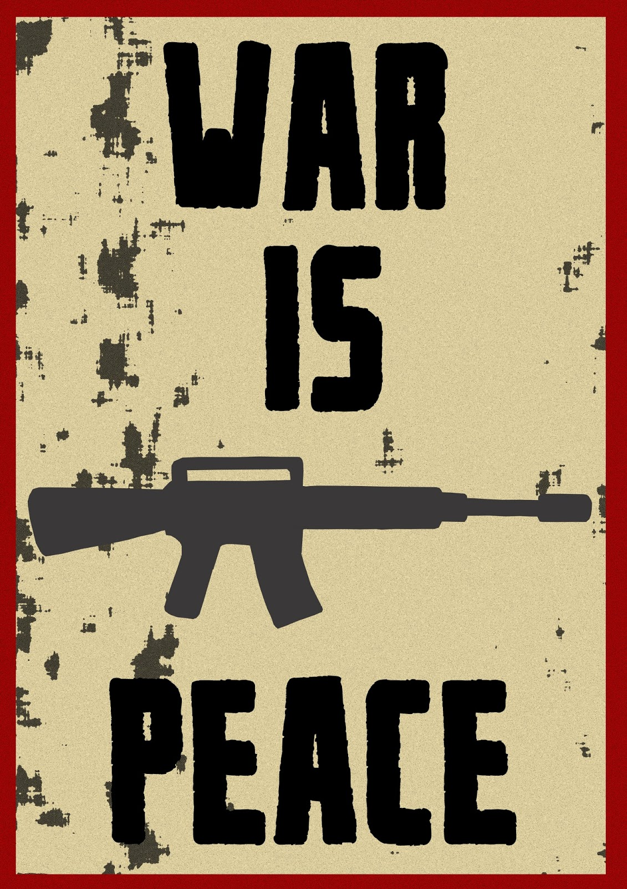
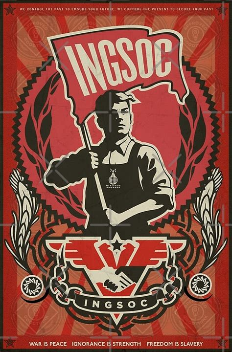
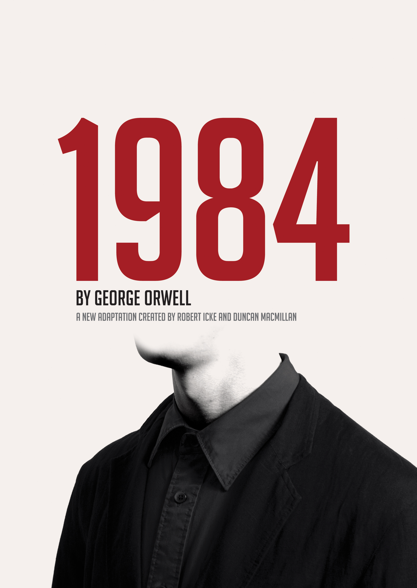

1984
War is peace. Freedom is slavery. Ignorance is strength.
YOU
0
:
0
LIFE


Nineteen Eighty-Four (also published as 1984) is a dystopian social science fiction novel and cautionary tale by English writer George Orwell. It was published on 8 June 1949 by Secker & Warburg as Orwell's ninth and final book completed in his lifetime. Thematically, it centres on the consequences of totalitarianism, mass surveillance and repressive regimentation of people and behaviours within society.[2][3] Orwell, a democratic socialist, modelled the authoritarian state in the novel on Stalinist Russia and Nazi Germany.[2][3][4] More broadly, the novel examines the role of truth and facts within societies and the ways in which they can be manipulated.

PEACE
The story takes place in an imagined future in the year 1984, when much of the world is in perpetual war.
Great Britain, now known as Airstrip One, has become a province of the totalitarian superstate Oceania, which is led by Big Brother, a dictatorial leader supported by an intense cult of personality manufactured by the Party's Thought Police. Through the Ministry of Truth, the Party engages in omnipresent government surveillance, historical negationism, and constant propaganda to persecute individuality and independent thinking.[5]
FREEDOM
The protagonist, Winston Smith, is a diligent mid-level worker at the Ministry of Truth who secretly hates the Party and dreams of rebellion.
Smith keeps a forbidden diary. He begins a relationship with a colleague, Julia and they learn about a shadowy resistance group called the Brotherhood. However, their contact within the Brotherhood turns out to be a Party agent, and Smith is arrested. He is subjected to months of psychological manipulation and torture by the Ministry of Love and is released once he has come to love Big Brother.
STRENGTH
Nineteen Eighty-Four has become a classic literary example of political and dystopian fiction.
It also popularised the term "Orwellian" as an adjective, with many terms used in the novel entering common usage, including "Big Brother", "doublethink", "Thought Police", "thoughtcrime", "Newspeak", and "2 + 2 = 5". Parallels have been drawn between the novel's subject matter and real life instances of totalitarianism, mass surveillance, and violations of freedom of expression among other themes.[6][7][8] Orwell described his book as a "satire",[9] and a display of the "perversions to which a centralised economy is liable," while also stating he believed "that something resembling it could arrive."[9] Time included the novel on its list of the 100 best English-language novels from 1923 to 2005,[10] and it was placed on the Modern Library's 100 Best Novels list, reaching number 13 on the editors' list and number 6 on the readers' list.[11] In 2003, it was listed at number eight on The Big Read survey by the BBC.[12]